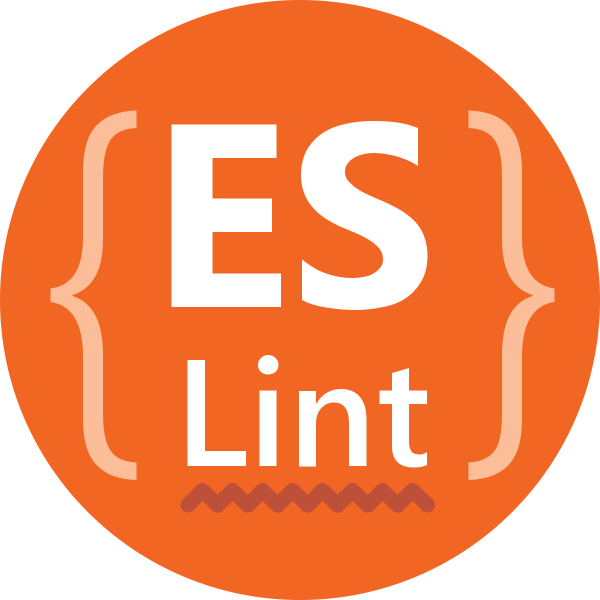

One of the most important aspects of coding standards is being able to use it to write clear and understandable code. Throughout my journey in Computer Science and into the world of coding, I quickly realized the importance of code organization and clarity. It’s very challenging to read code that is all over the place and follows no specific structure. This issue becomes a headache when working in teams, and can slow down the development process of software. In team settings, code quality is not just a must but an absolute necessity. High-quality, readable code produces a better understanding within teams, reduces the likelihood of errors, and doesn’t slow down the development process.
The quality of code plays a major part in coding. It helps bind how well a piece of software can be maintained and understood by others. To put it simply, code quality is the backbone of the success of a software project. The more I code and work with others, the more I’ve come to realize that the real value of coding standards is the production of high-quality code. To also mention, code isn’t just about following formatting rules, but is also about making good decisions on giving names for functions and variables, code flexibility, and the organization of code. By following specific coding standards, we can create software that is not only functional but also easy to read and maintainable.
After a week of writing code with ESLint in IntelliJ, I can confidently say that it is a valuable tool to have if you want to both learn code and write clear code. Having ESLint activated is like having a protective spell cast over you. It constantly protects you from developing unreadable and incorrect code as it highlights potential issues and enforces coding standards. This open-source tool not only detects but also corrects errors in JavaScript code. It is a real-time feedback tool that has become a guide in learning Javascript. It helps me adhere to coding standards and ultimately maximizes the quality of my code. While ESLint may seem annoying at first with all of the red underlines and the growing number of errors, its dedication to code clarity pays out over time, as an individual’s code becomes more clear, maintainable, and less prone to errors.